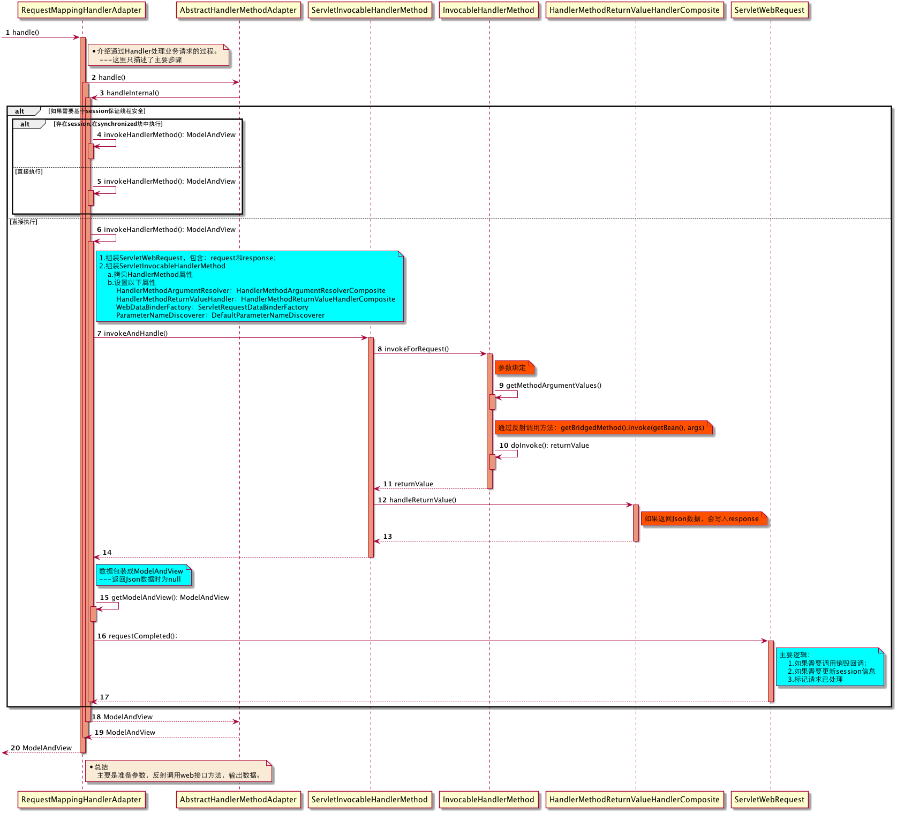
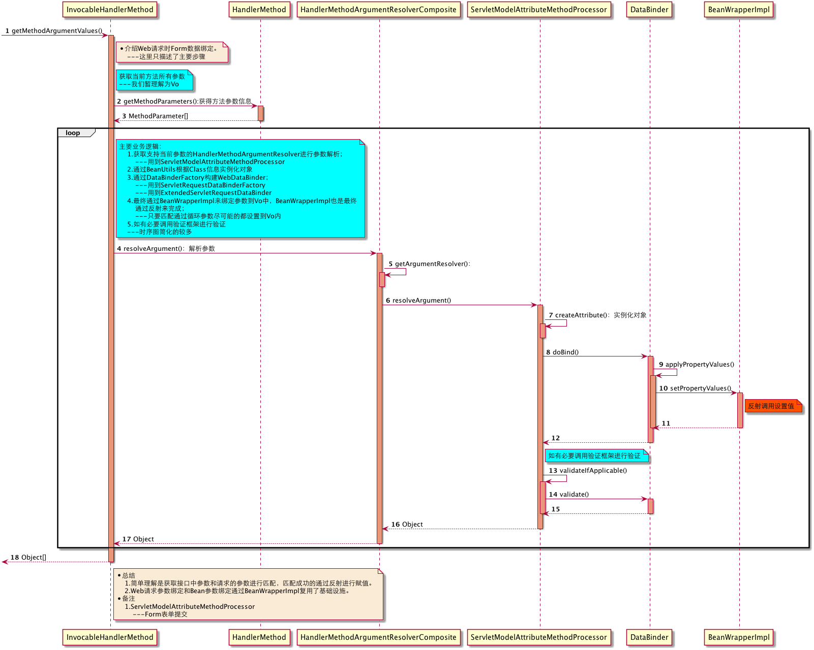
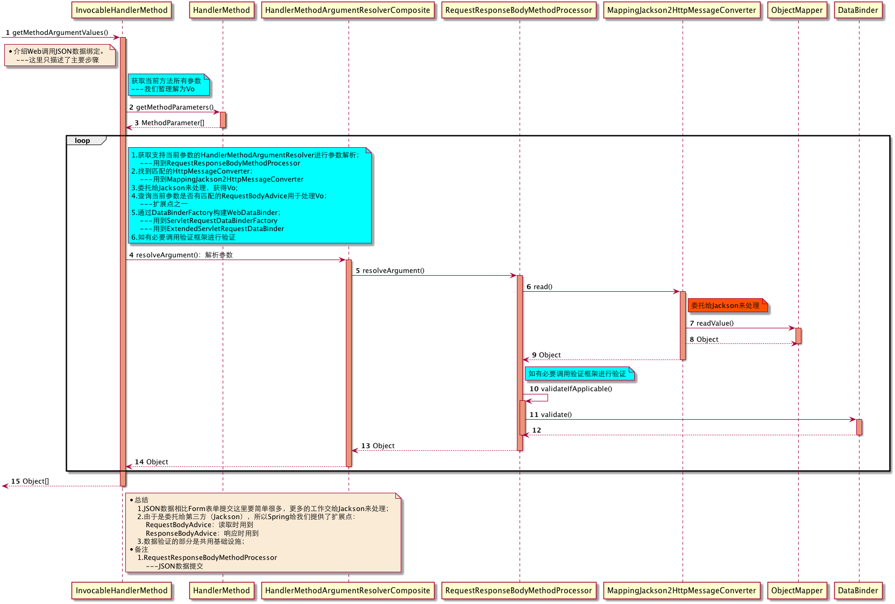
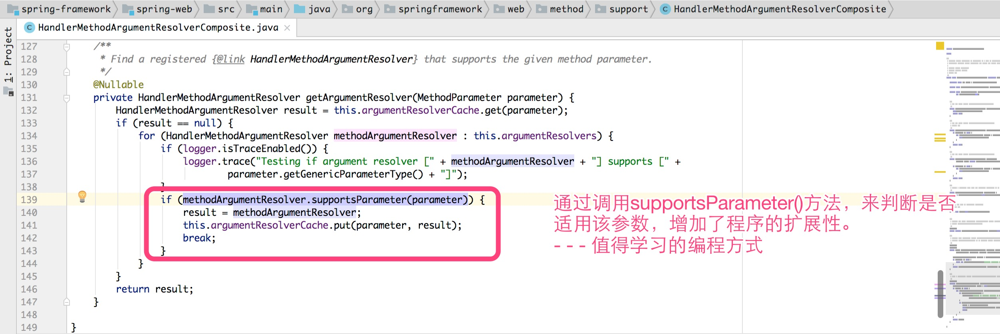
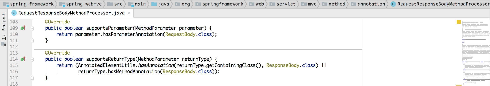
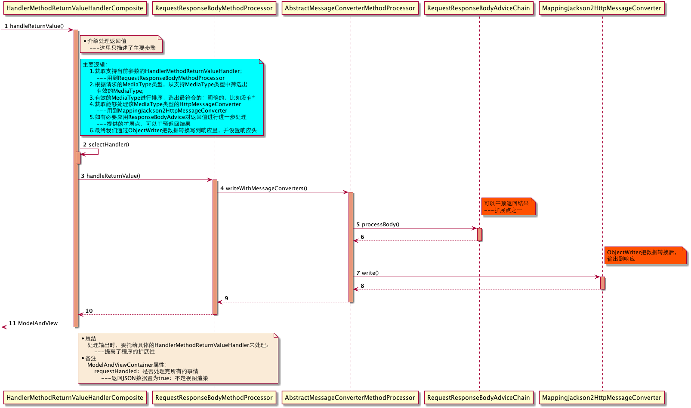

通过Handler处理业务请求
我们可以把处理请求的过程分成三部分来讲：
- 处理主流程；
- 参数绑定；
- 处理返回值
一.处理主流程
通过Handler处理业务请求时，并不是直接调用Handler，而是通过HandlerAdapter来调用。这样做的好处是Handler的实现方式不受限制，只要提供匹配HandlerAdapter就可以，而且同一个HandlerAdapter原则可以匹配多种类型的Handler。
下图是Handler处理主流程时序图：
{kind=link}

二.参数绑定
参数绑定我们就看两个我们常用的，其他情况相对比较简单：
- Form表单参数绑定
- Json数据参数绑定
1.Form表单参数绑定
下图是Form表单参数绑定时序图：
{kind=link}

2.Json数据参数绑定
下图是Json数据参数绑定时序图：
{kind=link}

我们发现参数解析具体委托给HandlerMethodArgumentResolver实现类来解析。这里列举下常用的HandlerMethodArgumentResolver：
- ServletModelAttributeMethodProcessor：Form表单
- RequestResponseBodyMethodProcessor：Json数据
- RequestParamMethodArgumentResolver：简单属性，或文件上传
- ServletRequestMethodArgumentResolver：HttpServletRequest参数
- ServletResponseMethodArgumentResolver：HttpServletResponse参数
在确定使用哪个HandlerMethodArgumentResolver时，Spring通过下图中的设计提高程序的扩展性。之前同事在做认证的时候也采用了这种方式，效果十分的好。
下图是HandlerMethodArgumentResolverComposite部分源代码：
{kind=link}

下图是RequestResponseBodyMethodProcessor的部分源代码。请求时通过@RequestBody判断是否需要处理，响应时通过@ResponseBody进行判断。
下图是RequestResponseBodyMethodProcessor部分源代码：
{kind=link}

三.处理返回值
我们以常用返回Json数据为例，看看Spring是如何处理的。
下图是处理返回值时序图：
{kind=link}

和处理参数绑定一样，处理返回值时具体委托给HandlerMethodReturnValueHandler实现类来处理。这里列举下常用的HandlerMethodReturnValueHandler：
- RequestResponseBodyMethodProcessor：输出响应数据，如Json数据
- ViewNameMethodReturnValueHandler：设置视图名
上面就是请求处理的主要逻辑。如果返回Json数据是不需要视图渲染，主要逻辑基本已完成。如果是需要视图解析，那我们看下视图处理的处理过程。
快速导航：